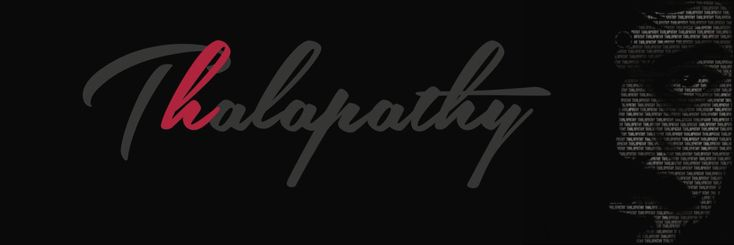

Early Life and Career Vijay was born in Chennai, Tamil Nadu, to film director S. A. Chandrasekhar and playback singer Shoba Chandrasekhar. He began his acting career as a child artist in the 1984 film Vetri and made his debut as a lead actor in Naalaiya Theerpu (1992) at the age of 18. His breakthrough came with the film Poove Unakkaga (1996), which established him as a leading actor in Tamil cinema. Achievements and Recognition Vijay has received numerous awards throughout his career, including several Vijay Awards and Tamil Nadu State Film Awards. He has a massive fan following, often referred to as "Thalapathy," meaning "commander" in Tamil, reflecting his leadership and influence in the film industry.
Recent Developments As of January 2026, Vijay is set to release his farewell film Jana Nayagan, marking a significant transition in his career as he announced his entry into politics with the launch of his political outfit, Tamilaga Vettri Kazhagam. This move has generated considerable attention, as he has been a dominant figure in Tamil cinema for over three decades.
Hit movies
|
|
Have you heard of a top-notch pro who beats his own record?” The trailer of Thalapathy Vijay’s Jana Nayagan asks this question during the introduction of the Tamil superstar. Now, the trailer’s performance has verified the claim. Thalapathy Vijay has set a new record with Jana Nayagan’s trailer. The political action drama has become the most-viewed Tamil movie trailer within the first 24 hours. The Tamil version alone garnered 34.4 million views in a single day. This broke the earlier record held by Vijay’s own film Leo, which had 31.90 million views in the same period.